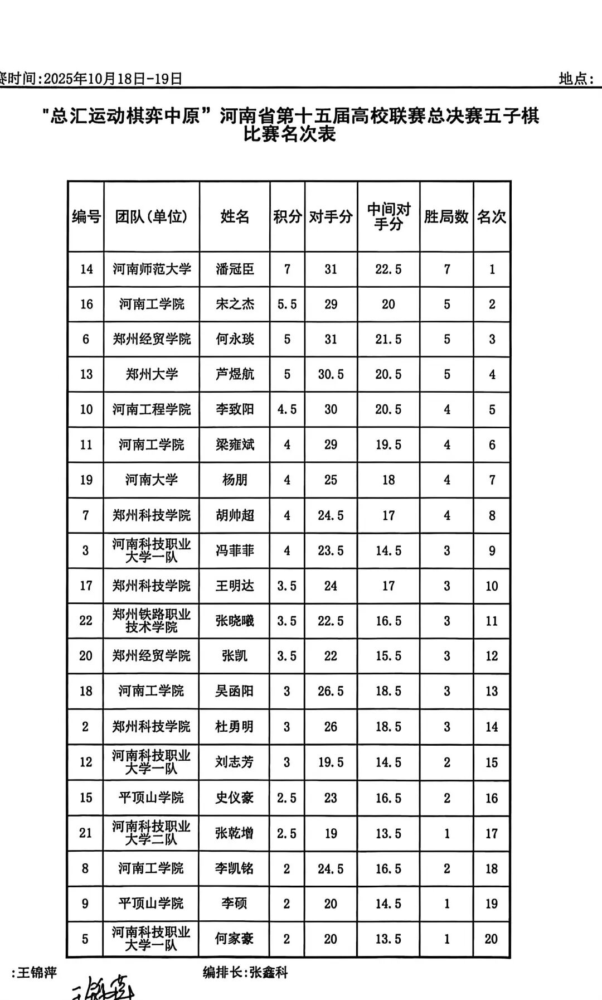
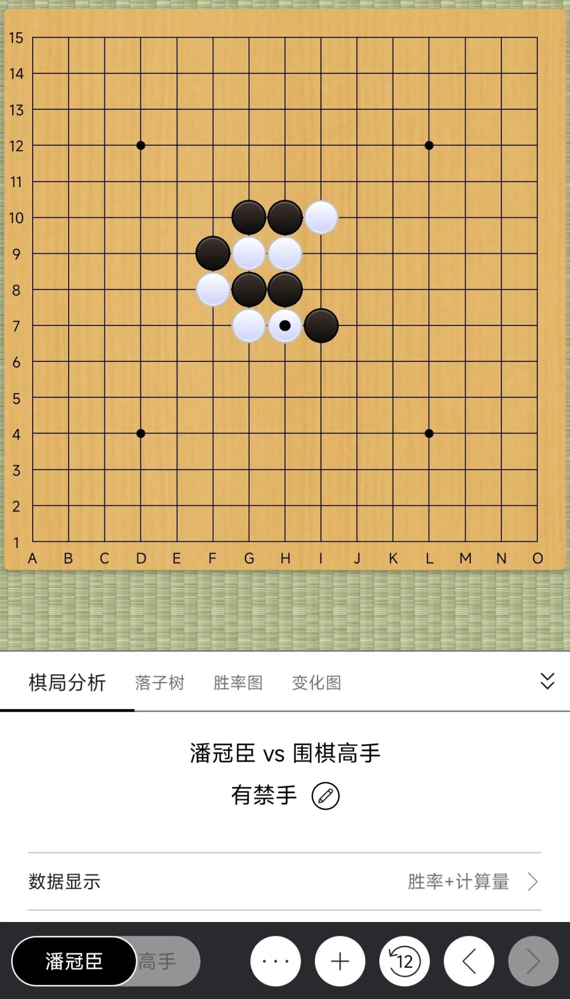
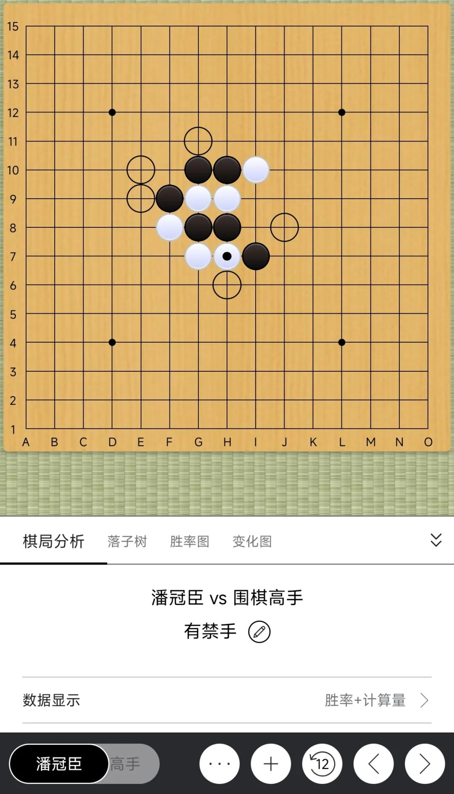
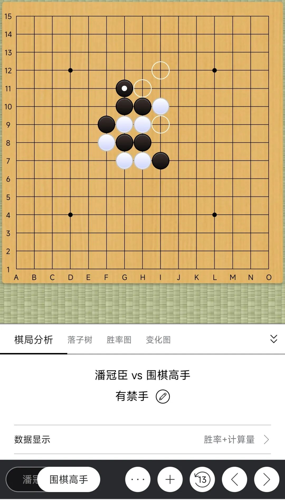
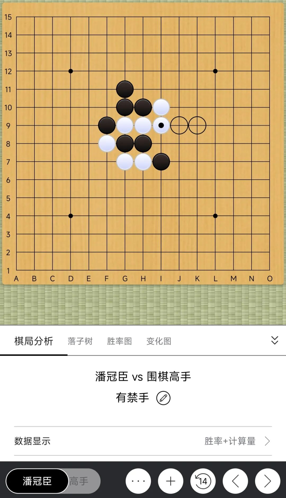
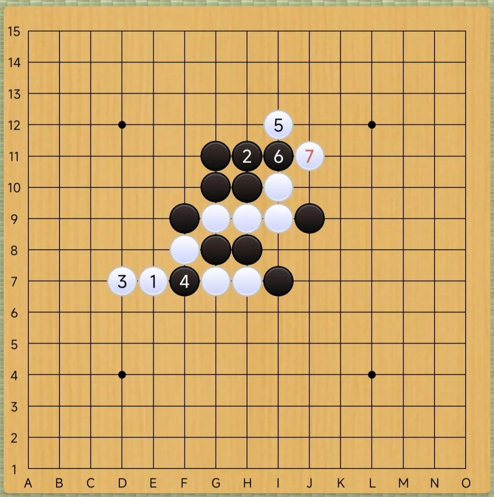
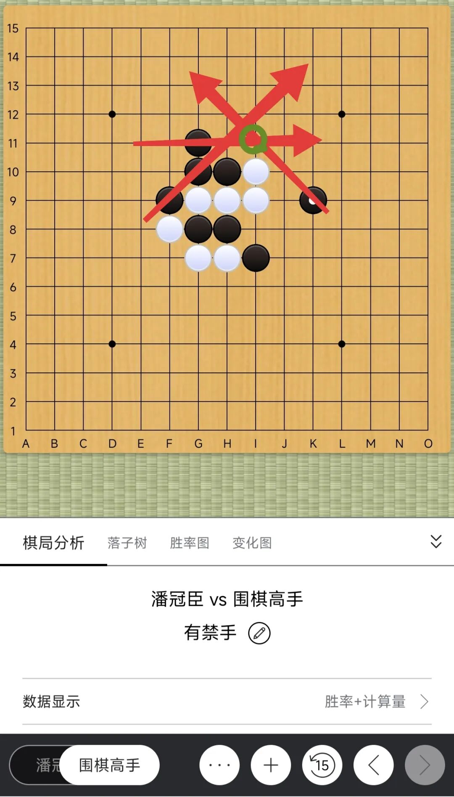
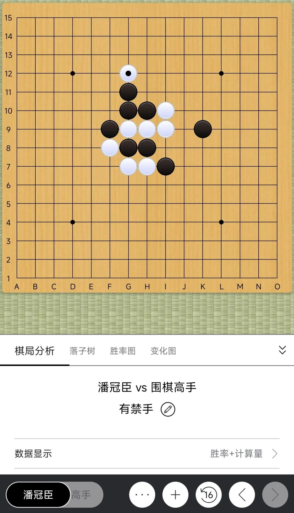
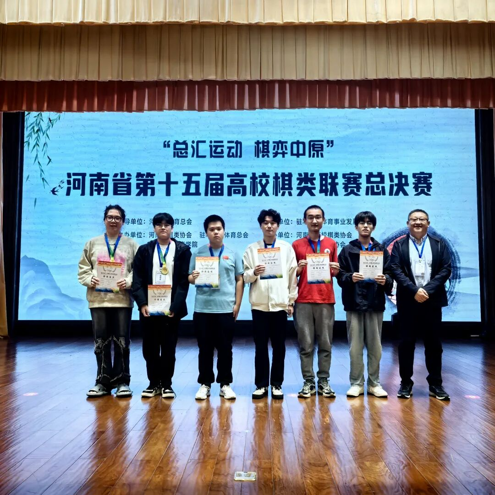
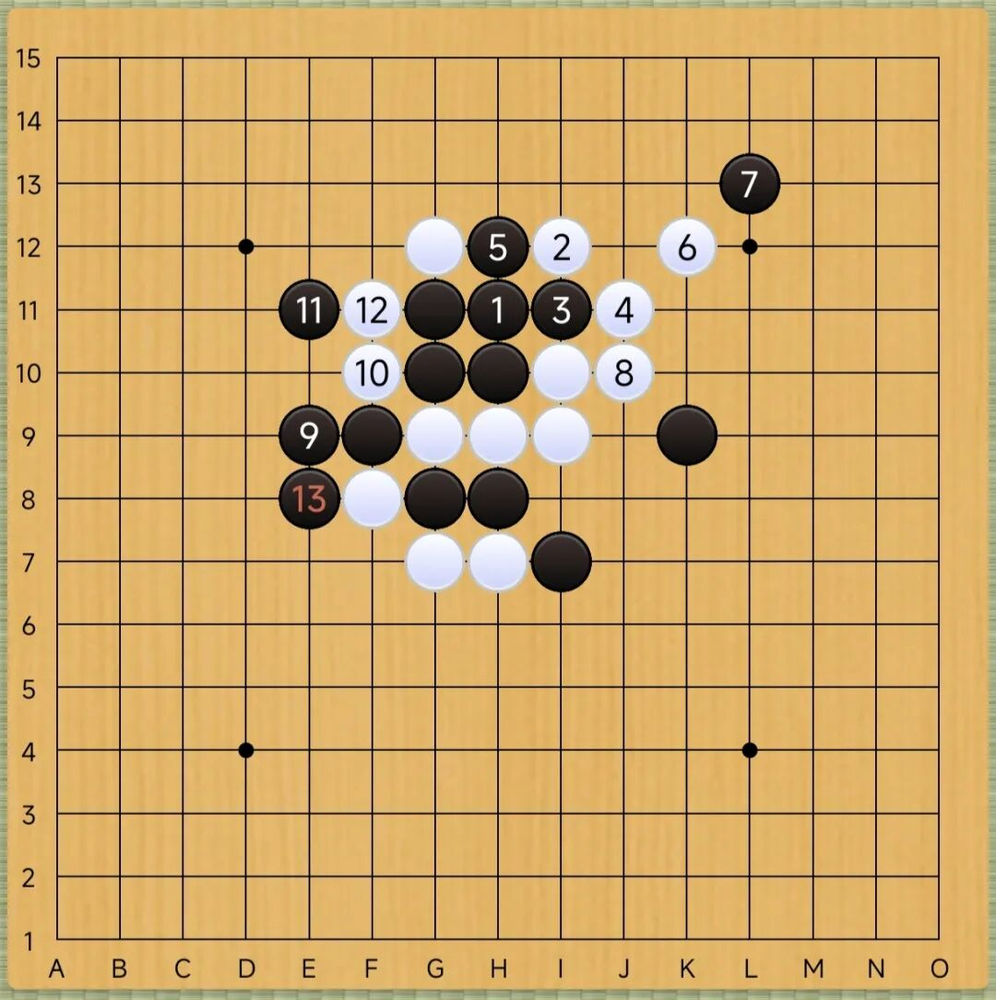

棋评｜驻马店河南省大学生五子棋总决赛①
秒拍，秒崩，秒杀
2025年10月18日至19日，“总汇运动，棋弈中原”河南省高校棋类联赛总决赛在驻马店市工人文化宫举行，我再次以七轮全胜的战绩获得五子棋比赛冠军。三七二十一分，成人公开赛塔十，青少等级赛与大学高校赛的两打，共同再现全胜的五子艺术。这次我们的棋评着重关键的几步，诠释当时实战的攻防与动机。

10月18日 第二轮
规则：五手两打
假先方：围棋高手
假后方：潘冠臣
是否交换：+
结果：黑方 潘冠臣胜
时值比赛拉开帷幕的上午，还在进行适应的调整。第一轮梦游式的打法，不足精神，开局完毕后上来第二步就错漏，被对手各种控制而被迫拖到中后盘，最终在对方的拍钟慌乱中才仓皇获得胜利，险些翻车。倘若遗憾落败，估计都可以严查我以前比赛是否涉嫌买棋了，哈哈。
来到第二轮，面对之杰哥的队友“围棋高手”，早有耳闻围棋棋艺之高，我也非常热爱与这样有计算力基础的围棋大师对弈五子棋。他在今年春天我主裁的河南大学站省赛豪取五子棋第四名，而我上午状态肯定是不佳，自然不敢懈怠。他开出平衡局有备而来，我交换后拿黑展开交锋，我们一通稀奇的变化来到这个似曾相识的局面。

这个局面让人温馨，常见而明确，黑棋一定存在不小的优势。显然现在需要找到一个扩大优势的好点来做VC2级别的蓄力。前期对手计算思考用时很长，落子规范有序，和这样认真的棋手下棋也确实是很愉悦的事情。

来到我的黑13。肯定是大优了。这个形状容易联想到云雨月和明星。第一感就是走在J8处一子通三路。这样是否合适？看着不错，像明星一打，白棋束手无策，但是空间感不太好，早晚要补棋，且白棋可选的防守应该很多，可以纳入备选库，暂时不使用这种方式。第二感是走G11蓄势待发，准备接下来深入控制白棋，看上去也很不错，纳入备选库以待后续选择。剩下的，比如走在E9或者H6的做2挡2的方式稍显保守，很可能葬送优势，自然不采纳。E10看上去也不错，但是两个眠三离白棋唯一的活二距离较近，担心后续失去控制，也没有采纳。综合来看还是想下在G11，获取更大的优势空间，慢慢的用VC2一步步地让对手身陷囹圄。所以优先深入计算G11，如果发现不好，我再重看J8或者E10也来得及。

回过头来深入计算G11，猜测白棋后续的白14很可能落在I9处强防，或者走H11堵我好点。像I12这种点，我认为以对手的水平下不出来。且对手如果真走一个I12，我走I11塞进去，以后准备抢K9这种好点，如此大的空间与连接，混都可能直接可以把对手混死了。如果对手走H11强点，我就J9马步防住，白棋毫无空间和连接，只能是被动挨打。这两个点看来都不算太强，思考的重点是I9的强防。

倘若对手白14走I9，我该如何应对呢？马上就能看到黑15的J9和K9两个点。J9看起来不错，把白棋横线的线路阻断，斜线也不能借上方的东西绕上去，竖线活二的空间也被压缩，似乎是防守等待的“后中先”好棋。但是细算发现，这棋无法获取先手。理由有二：其一，最直接的，走J9对上方的进攻帮助微乎其微，这个J9不好给上方的棋借材料，后面上方很可能都不够杀。其二，稍间接些的，接下来白16可以落于E7，做两个眠三以逸待劳，后面你想在上面做T级别的强杀，参考下图白棋正好可以防住，且上方遗憾的不够杀出，J9确实帮不上忙。现在就完全落入后手了，葬送了这大好的优势。所以这个J9看起来好，实际上不好，是后手棋，不应该行于此处。

于是我们再看黑15=K9。倘若K9也不够好，那基本上黑13就不能选择G11了，需要抓紧时间换个进攻点。所幸，K9确实不错。走在K9，借棋是通畅的，进攻是有接应的，能够连续的。和刚刚类似，如果白16按刚才的方案走E7之后想防住则如下图所示不能成功，因为K9和上方的材料业已有了连接，存在VCT可以连续进攻。如果白棋单防则基本防不住，且先手在我这边，我左上的材料也足够杀出了。而且走在K9处确实给足了白棋压力，对方的白16很可能会出现大失误。现在已然算清，看来黑13可以落于K9。


整个思考过程实际上就是这样，花费时间大概几分钟，不算长，也能感觉出自己状态差不多回来了。我黑13走在K9，对方长考了一段时间白14果真选择了I9，我马上欻的一下秒拍黑15=K9，肉眼可见的对方就已经崩了。估计他业已发觉我早知道他会走什么了。后面对方非常紧张地再次实行长考，果然白16失误，走在了G12，我便短考确认存在左右都有VCT的两头蛇，于是展开最终的必胜，黑29白投了。这里大家可以自行算下这个比较简单的VCT，我在文末给出后续全谱供大家检查答案。

局后和对手复盘交流，他发现了我黑17开始的后续右侧的双杀，但是没发觉左边还可以跑出去完成VCT。我表示如果白16=H11直接挡住暂时还不会暴毙，我接下来还要在左上方继续进攻，如果我不慎失误，白棋仍有一线生机。
至此第一天上午的对局结束了，有惊无险，基本调整完毕，接下来的五轮对手，恰巧就是这次比赛最终的二三四五六名，只不过顺序有所不同......
